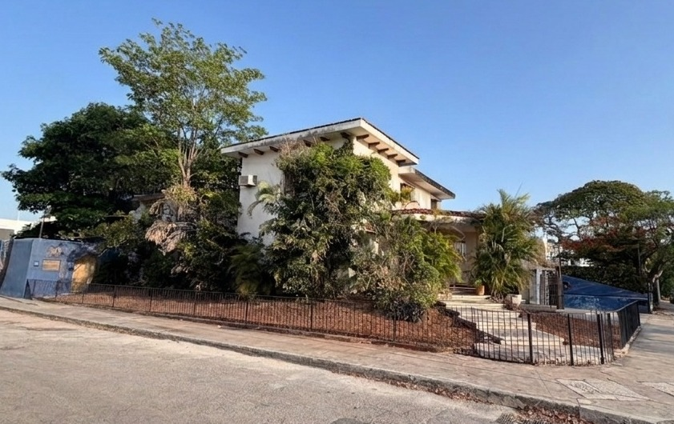
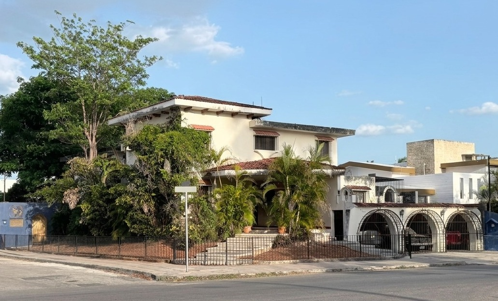
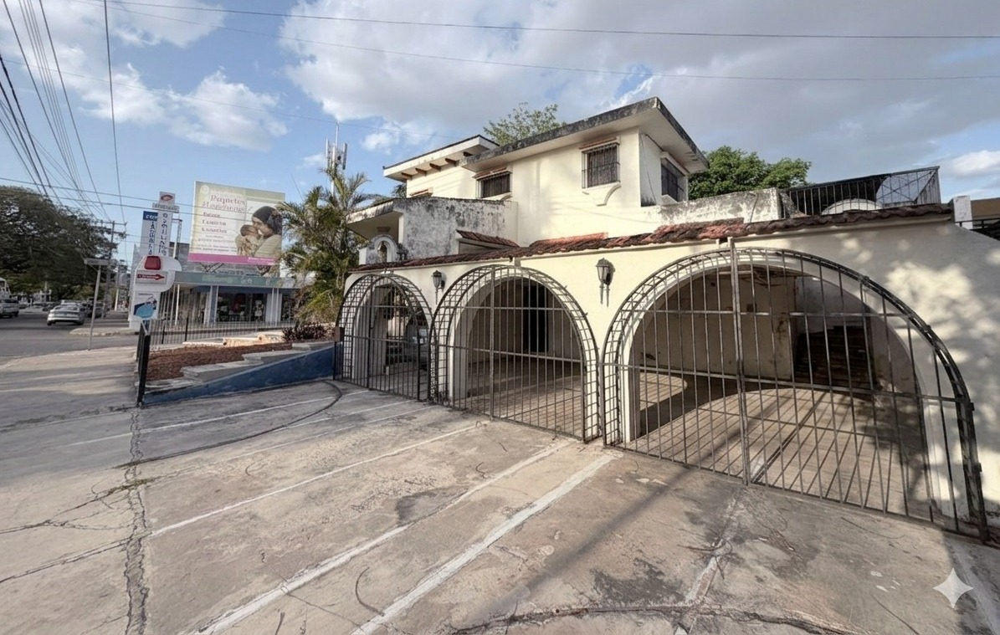
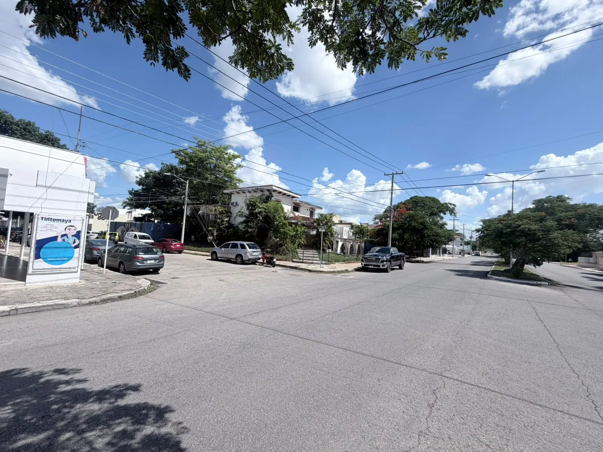
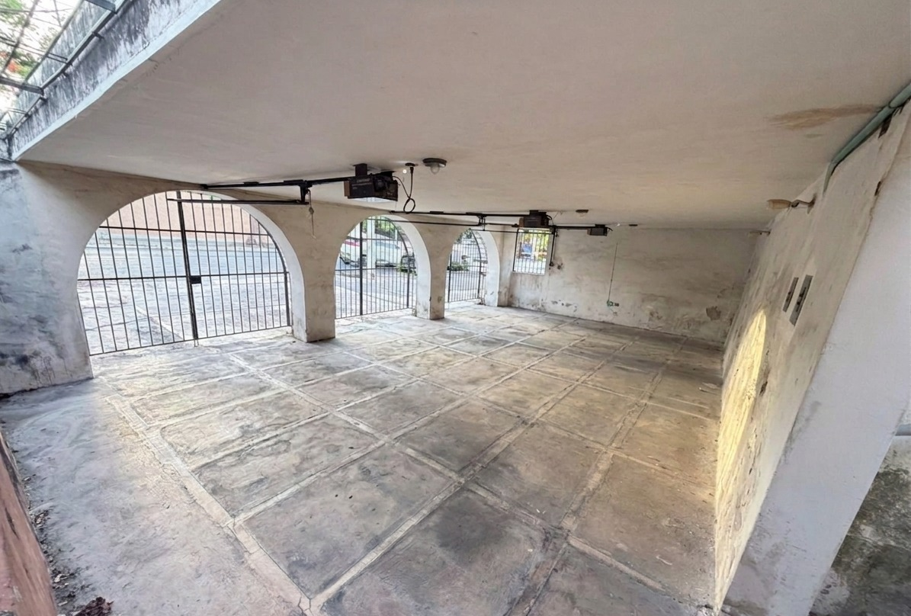
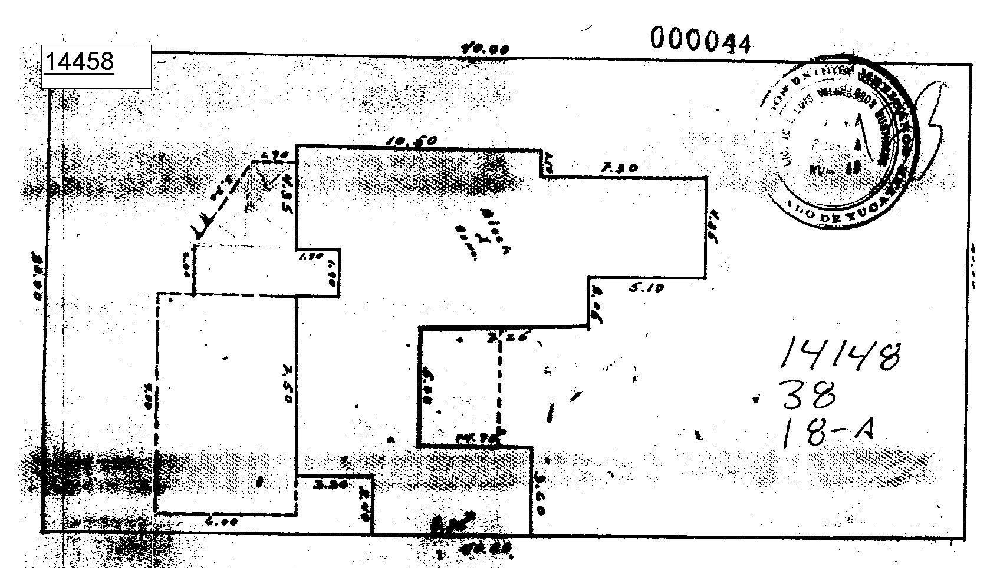

Propiedad única en colonia Campestre, una de las más antiguas y bonitas de la ciudad. Superficie estratégica con uso de suelo ideal para comercio, edificio o locales comerciales.
Este terreno se ubica sobre avenida de alto flujo en una de las colonias más antiguas y encantadoras de Mérida, rodeado de arquitectura colonial, cafés, galerías y comercios consolidados.
Con 15 metros de frente y 42 de fondo (630 m²), su uso de suelo permite desarrollar locales comerciales a pie de avenida, un edificio residencial o mixto, o cualquier proyecto de comercio que aproveche la visibilidad y el carácter único de la zona.
La casa existente conserva el encanto de la arquitectura yucateca: techos altos, molduras originales y un patio interior que puede integrarse al nuevo proyecto.

Superficie y frente suficientes para desarrollo vertical residencial o mixto.
15 m de frente sobre avenida: vitrina perfecta para marcas y franquicias.
Avenida consolidada con transporte público, servicios y comercios activos.
Una de las zonas más antiguas, bonitas y cotizadas de Mérida, con alma propia.
Haz clic en cualquier fotografía para ampliarla y apreciar el carácter colonial de la propiedad.




El lote cuenta con una geometría rectangular perfecta para proyectar: frente amplio hacia avenida para el área comercial y un fondo profundo para desarrollo habitacional u oficinas, conservando el patio como área verde o terraza.
| Frente | 15.00 m |
| Fondo | 42.00 m |
| Superficie total | 630.00 m² |
| Casa existente | Conservable / remodelable |
| Patio trasero | Aprovechable como terraza o área verde |
| Uso de suelo | Comercial · Mixto (H4) |
La propiedad se encuentra sobre avenida principal, a minutos del Centro Histórico, en una colonia de arquitectura centenaria, parques arbolados, cafés de autor y vida cultural activa.
Explora el mapa y traza tu ruta directamente desde la página:
Agenda una visita al terreno o solicita información de precios, medidas y uso de suelo. Respondemos el mismo día.